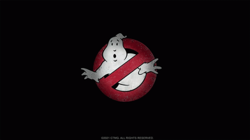
GHOSTBUSTERS
Película estadounidense de 1984 del género terror fantástico con algunos toques de ciencia ficción. Fue estrenada en Estados Unidos el 8 de junio de 1984. Fue producida y dirigida por Ivan Reitman y protagonizada por Bill Murray, Dan Aykroyd, Harold Ramis, Rick Moranis, Sigourney Weaver, Annie Potts y Ernie Hudson.
Peter Venkman, Ray Stantz y Egon Spengler, son tres parapsicólogos expulsados de una universidad de la Ciudad de New York, debido a sus estudios y prácticas poco ortodoxos, y que comienzan su propio negocio trabajando como cazafantasmas, e investigando fenómenos paranormales usando tecnología sofisticada para intentar capturar las manifestaciones ectoplasmáticas.
"WHO YOU GONNA CALL?"
Peter Venkman
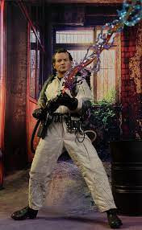
Considerado como "el perezoso" del equipo. Generalmente, no suele tomar su trabajo muy en serio, pues tiene un sentido del humor bastante seco. También, coquetea con las mujeres atractivas, incluyendo a clientes como Dana Barrett e Ilyssa Selwyn. Aunque Peter es un científico, no se preocupa en preponderar como un miembro técnicamente experimentado o académicamente inclinado a diferencia de sus compañeros Egon y Ray, y este tiende a reflejar un sentido del humor más agresivo al momento de luchar contra los fantasmas.
Ray Stantz
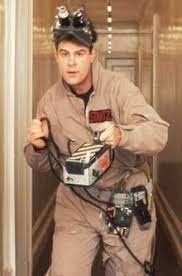
La devoción de Ray por el emprendimiento de la compañía fue bastante obvia cuando hipotecó la casa que sus padres le habían dejado para proporcionar el capital económico para comenzar Ghostbusters Inc. También era un hombre hábil y en gran parte responsable de la reparación y modificación del Ecto-1. No era particularmente religioso, pero parecía creer en un tipo de reino espiritual.
Egon Spengler
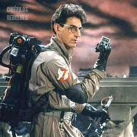
Egon se caracteriza por ser trabajador y permanecer constantemente enfocado en lo que refiere a los fenómenos paranormales de la Ciudad de New York. Su vida gira en torno al estudio científico, tanto en general como en los fantasmas. Durante su tiempo libre, se dedica a coleccionar esporas, mohos y hongos. Él no articula bien sus emociones y se ha descrito a sí mismo como "siempre serio".
Winston Zaddemore
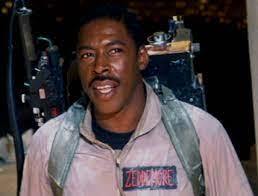
El cuatro, Winston es quizás el más convencional. Es el hombre común de los Cazafantasmas. Él es una persona responsable y confiable, sin embargo, como se muestra mientras están en la cárcel durante la película Ghostbusters, él piensa por sí mismo. Su trasfondo cristiano se muestra a veces en cuestiones éticas, y puede ser en parte el por qué es tan confiable. Winston se hace cargo del aspecto mecánico del Ecto-1, dejando a Ray más tiempo para trabajar con Egon y construir nuevos equipos.
Ecto-1
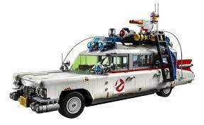
El vehículo utilizado para el Ecto-1 fue un 'Cadillac professional' de tipo 'chassis' del año 1959, fabricado por la empresa Miller-Meteor. La extraña pero curiosa combinación del diseño de una ambulancia y la forma de un coche fúnebre terminó convirtiéndose en el producto final. El Dr. Ray Stantz encontró el vehículo poco después de haber hipotecado la casa de su madre para comprar la Estación que pronto pasaría a ser la famosa sede de los Cazafantasmas. Gracias a sus habilidades en mecánica, Ray fue capaz de reparar y rediseñar el vehículo, el cual adquirió por cuatro mil ochocientos dólares.
Equipos de Protones
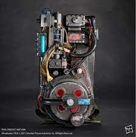
Consiste en un disparador nuclear de protones de alta capacidad, que aparente ser lo único capaz de herir y retener a un fantasma -si bien no logra "matarlo". Se supone que son artefactos atómicos de alta potencia.
Trampa
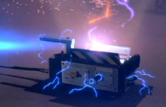
Contenedor sellado que permitió a los Cazafantasmas transportar los espíritus a la Unidad de Contención, donde serían liberados al interior de la red. No está claro qué sucede con la trampa una vez colocada dentro de la cuadrícula, aunque algunos han teorizado que cuando un fantasma capturado se coloca en la Unidad de Contención, la entidad se bombea fuera del cartucho de la trampa para que pueda usarse nuevamente.
Principales fantasmas
Slimer - Pegajoso
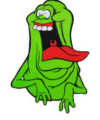
Fue un fantasma legendario para el personal del Hotel Sedgewick, lugar donde se refugió en el; su territorio habitual era el duodécimo piso, pero sus manifestaciones no solían ser violentas y sólo implicaban ir tras comida. Como consecuencia, la administración de hotel fue capaz de mantener en silencio los fenómenos sobrenaturales que daban a lugar (por un tiempo). Por alguna razón, la avecinación de Gozer provocó que Slimer (y muchos otros fantasmas) tuvieran un comportamiento muy distinto al de costumbre. Como consecuencia, el personal del hotel no pudo mantener la presciencia del fantasma en secreto y contactaron a los Cazafantasmas. Sin embargo, los Cazafantasmas aún no habían probado su equipo por completo, lo que significaba que aún no se encontraban del todo preparados para efectuar la captura del fantasma. Ray fue el primero en encontrar a Slimer, pero tras intentar atraparlo lo perdió de vista y Slimer escapó al siguiente pasillo, en donde empapó a Peter con su ectoplasma.
Gozer
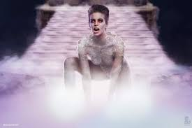
También conocido como Gozer el Gozeriano, Gozer el Destructor, Gozer el Viajante, Volguus Zildrohar, o Lord de Sebouillia. Una entidad maligna ultra-poderosa sumamente antigua de otra dimensión que fue convocada a New York para destruir el mundo. Fue originalmente exaltado como un dios por los hititas, mesopotámicos y los sumerios alrededor del 6,000 AEC.
Zuul el Guardabarrera
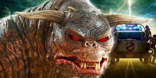
Semidiós y esbirro de Gozer, El Destructor, junto con Vinz Clortho el Maestro de Llaves. Se supone que Zuul es una mujer debido a que se la conoce como Guardabarrera y por poseer una anfitriona femenina en lugar de un anfitrión masculino.
Vinz Clortho el Maestro de Llaves
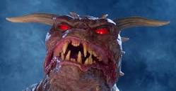
Semidiós y esbirro leal de El Destructor, y poseyó a Louis Tully durante la película Ghostbusters. Se supone que Vinz es un masculino porque es conocido como el Maestro de Llaves y poseía un anfitrión hombre en lugar de un anfitrion mujer. Además, tiene cuernos notablemente más largos que los de Zuul, La Guardabarrera, que se cree que es un femenina. Vinz Clortho fue adorado por los sumerios y los hititas en el 6.000 era común, junto con Zuul y su amo.
Stay Puft - Hombre Malvavisco
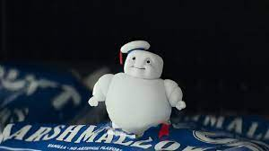
Apodado Tubby Soft-Squeeze por Ray y Peter, pasó por Columbus Circle hacia el Edificio Shandor y sumió a toneladas de civiles en pánico total. Aplastó una iglesia cercana al lado antes de intentar escalar 550 Central Park West. Después de que los Cazafantasmas intentaron destruirlo con sus Paquetes de Protones.